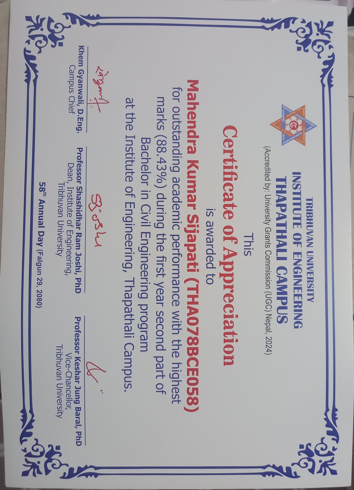
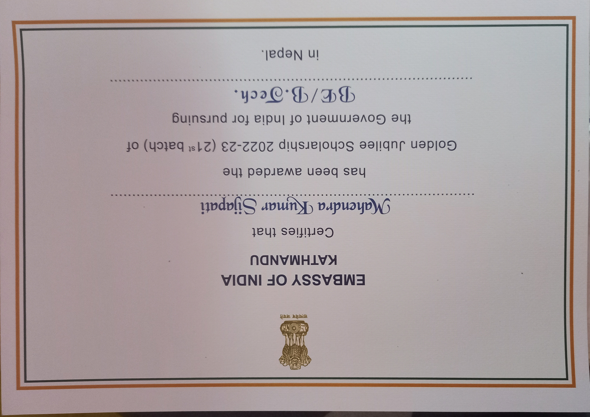
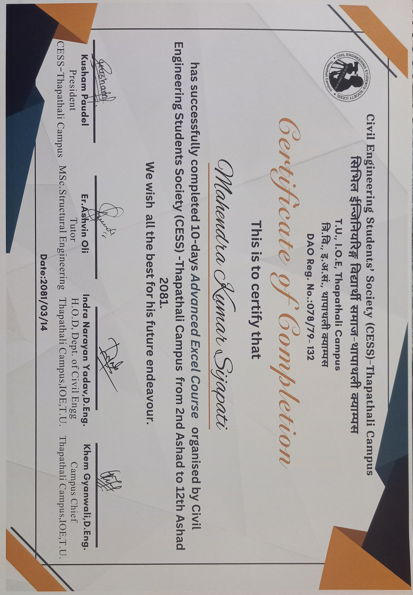
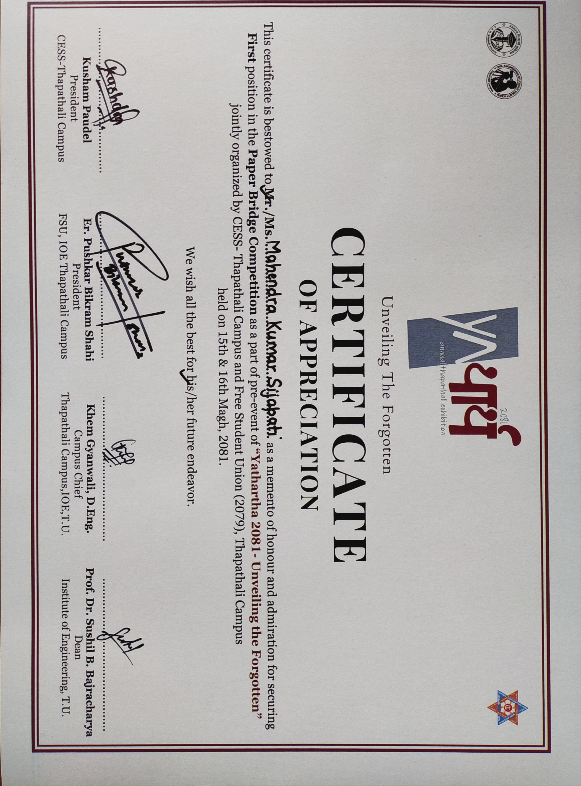
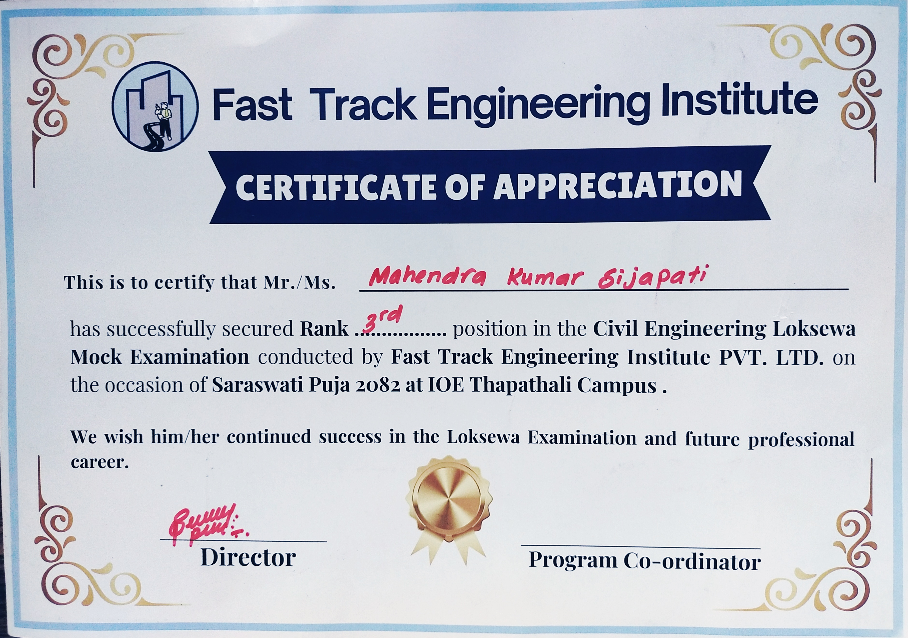
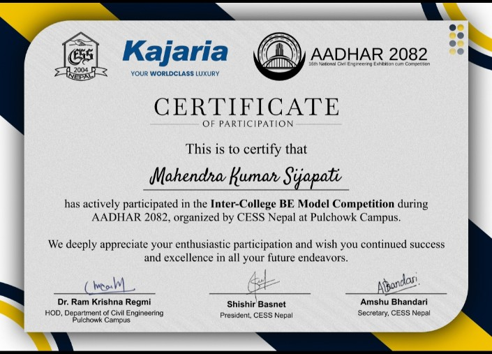
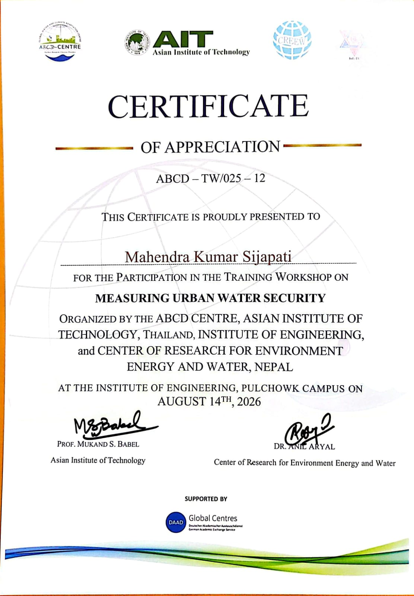

Mahendra Kumar Sijapati
Civil Engineering Professional & Hydrology Scholar
Recently graduated from Institute of Engineering Thapathali Campus with specialization in structural design, hydrologic modeling, and climate-sensitive infrastructure. Recipient of the prestigious Golden Jubilee Scholarship. Expertise in AutoCAD, ETABS, ArcGIS, and SWAT modeling for sustainable water resource management.
- Specializations: Structural Analysis, Watershed Modeling, Hydropower Assessment
- Research Focus: Climate change impact on river basins and sustainable infrastructure
- Recognition: Multiple competition awards and academic excellence honors

About Me
As a civil engineering professional, I specialize in structural analysis, hydrologic modeling, and sustainable infrastructure design. I deliver resilient solutions for academic research and practical engineering challenges while maintaining strong academic performance and leadership in technical competitions.
Academic Foundation
Bachelor of Civil Engineering
Institute of Engineering, Thapathali Campus, Kathmandu
Graduated • Institute of Engineering, Thapathali Campus
Bachelor's Degree Completed+2 Science
Khwopa Secondary School, Dekocha, Bhaktapur
Batch 2077-78
GPA: 3.78 / 4.00Secondary Education Examination (SEE)
Bagiswori Secondary School, Chyamhasingh, Bhaktapur
Distinction Profile
GPA: 3.90 / 4.00Engineering Sectors & Core Projects
Climate & Hydrology Modeling
Advanced hydrology tracking using SWAT and ArcGIS frameworks. Developed simulations assessing the Hydropower Potential of the Arun River Basin under Climate Change Scenarios, analyzing runoffs and discharge trends.
Honors & Competition Milestones
Golden Jubilee Scholarship Award
Prestigious merit framework awarded by the Embassy of India, Kathmandu for exceptional engineering studies.
1st Position — BE Intra-College Model Competition
Secured top honors for technical excellence at the Yathartha 2082 Engineering Symposium.
1st Position — Paper Bridge Engineering Challenge
Engineered an optimal weight-bearing truss configuration during the Yathartha 2081 structural event.
2nd Position — Concrete Mix Design Competition
Achieved target compression metrics through exact structural mix designs at Yathartha 2082.
Rank 3rd — Civil Engineering Loksewa Mock Examination
Ranked third nationwide in public sector civil service mock evaluations conducted in 2082.
Verified Certificates
 Project Verification
Project Verification
Arun River Basin Project Award
Thapathali Graduate Conference • Climate Scenario Modeling

Academic MeritAcademic Topper Certificate
IOE Thapathali Campus • 1st Year Part II (88.43%)

Scholarship AwardGolden Jubilee Scholarship
Issued by the Embassy of India, Kathmandu

Technical CourseAdvanced Excel Certification
Organized by Civil Engineering Students' Society (CESS)
 1st Place Winner
1st Place Winner
1st Place: Model Competition
Yathartha 2082 Engineering Festival

1st Place Winner1st Place: Paper Bridge Challenge
Yathartha 2081 Symposium Exhibition
 2nd Place Winner
2nd Place Winner
2nd Place: Mix Design Challenge
Yathartha 2082 Technical Evaluation
 3rd Place Winner
3rd Place Winner
3rd Place: Inter-College Model
Yathartha 2082 Engineering Platform
 Competition Award
Competition Award
Engineering Competition Award
Certificate from the engineering festival collection

Academic CertificateAcademic Certificate
Academic achievement from the certificate collection

Certificate RecordCertificate Record
Supporting certificate record from the portfolio archive

Certificate RecordAdditional Certificate Record
Supporting certificate from the portfolio archive
Get in Touch
Contact Form
Send a direct message for collaboration, project inquiries, or academic references. The form will open your email client so you can send your inquiry right away.
Direct Contact
Prefer email? Reach out directly using the details below.
Email: masijapati79@gmail.com
Phone: +977 9845171064
Location: Aathabis-9, Dailekh, Nepal
Why connect?
- Engineering consultancy and collaboration
- Academic research and project support
- Internship or employment discussions